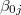

| 階層的線形モデルによるデータ分析の実際 — HLM6，SAS，Rを利用して — |
| 階層的線形モデルによるデータ分析の実際 — HLM6，SAS，Rを利用して — |
HLM6には，さまざまなグラフを表示させる機能がついている。 ここでは，例として式(1)で示したレベル1の回帰式が，学校の属性を表すSECTORによってどのように異なるのかグラフで示してみたい。
[File]-[Graph Equations]-[Level-1 equation graphing]を選択する。
レベル1のモデル式をグラフ化するためのウィンドウが立ち上がる。
レベル1の説明変数を投入する。ここでは，"SES"を選択。
表示するグループの数を選択する。ここでは，"All groups"を選択。
学校を分類する変数を選択。ここでは，"SECTOR"を選択。
[OK]をクリックすると，グラフが表示される。
このグラフを見ると，Cathoric（SECTOR=1）の学校のほうが切片の値は大きいが傾きは小さい傾向にあることがわかる。 これはSECTORにかかるレベル2の偏回帰係数の推定値の符号と一致している。
ここで，*ページに示したレベル2の偏回帰係数の推定結果の欄を次に再掲したのでグラフとの対応を確認されたい。
変数SECTORにかかる偏回帰係数の値に関して，切片（"INTRCPT1, B0"）欄ではとプラスの値であるのに対し，傾き（"SES slope, B1"）欄ではとマイナスの値となっていることがわかる。
| 階層的線形モデルによるデータ分析の実際 — HLM6，SAS，Rを利用して — |